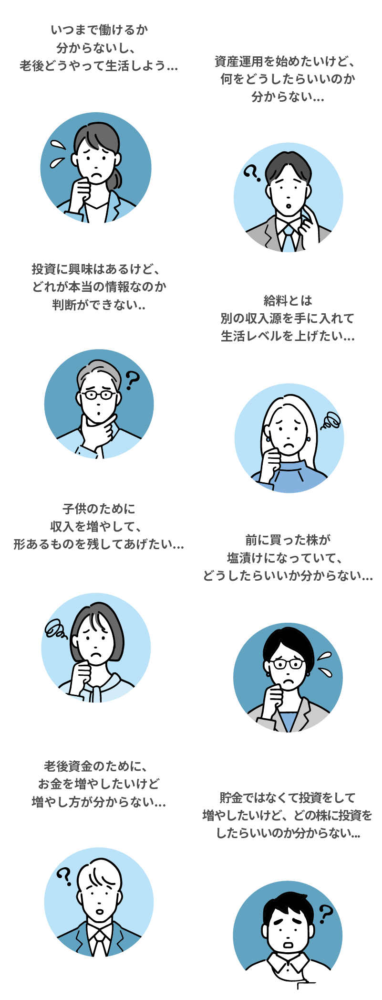
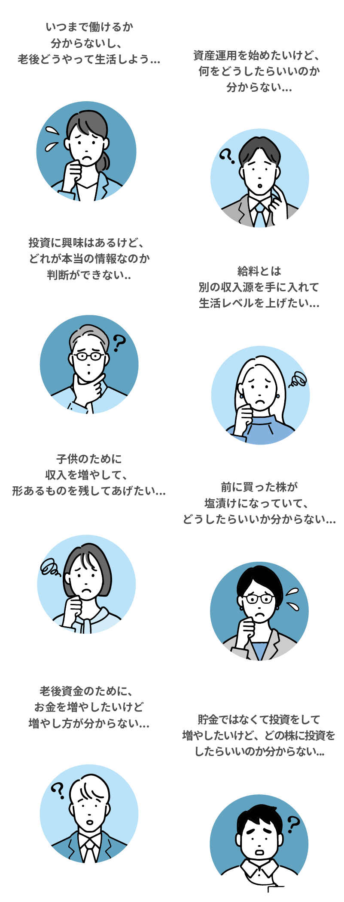

神奈川県/60代男性/退職
最高で月利300万円を得ました！
会社が早期退職を募ったので、辞めることにしました。
ただ、その先の人生で再雇用などはされたくないなと思い、前から少しやっていた株式投資を本格的に取り組んでみようと思って始めました。
家にいる時間が長いので、デイトレードをメインに取り組んでいます。
運が良かったかもしれませんが、初月から30万円の利益を得られて、3ヶ月で300万円の利益を得ることに成功しています。
これからもっと精度を高めていきたいです。
秋田県/50代女性/主婦
家事の合間に約5万円を稼げるようになりました
普段は専業主婦をしています。子供たちは自立したので、主人と二人暮らしなのですが、家のことでやることが多く、なかなかパートにもいけずにいました。
コロナ禍と重なったこともありますが、在宅でできる仕事はないかと探していた時に、主婦で株式投資で稼いでいるせいこさんをYouTubeで知って話を聞いてみました。
最初は、「私でもできるのかな」と不安でしたが、すごい細かいことから親身に相談に乗ってくれてとても心強かったです。
開始1ヶ月目はほんの少し利益が出た程度でしたが、2ヶ月目には、5万円ほどの利益を出せました。
おこがましいですが、コツを掴んできた感じがしているので、これからより頑張っていきたいと思います。
千葉県/40代男性/専業
含み益15万円が出たので思い切って株式投資一本でやっていくことにしました
数ヶ月前までは、サラリーマンをしながら家族を養っていました。
ただ、「この先会社からの給料だけでは厳しい」と思い、株式投資を始めることにしたのです。
本を読んだりしていたので、何となくやり方などはわかっていたと思いますが、せいこさんのやり方を聞いて、今までに聞いたことも見たこともないやり方でした。
そのやり方で取り組んでみたところ1ヶ月も経たないうちに何とか15万円の含み益を達成しました。
まだ始めてから半年も経っていないですが、思い切って脱サラをして、デイトレを中心に日々5万円を稼ぐことを目標にしてトレードしています。まだ2万円弱ですが、目標は目の前なので、これからも頑張っていきたいと思います。
大阪府/30代男性/営業職
せいこさんのコーヒー投資法におんぶにだっこです
株式投資は全くの初心者で始めました。
SNSを開いたら、教えている人はたくさんいますが、せいこさんの距離感が近く感じるような話し方とかサポートをとても信頼しています。
なので、右も左も分かりませんでしたが、せいこさんの言っていることをそのまま実践しています。
そのまま実践しているだけで、開始から2ヶ月くらいで17万円くらいの利益が出せました。
そのおかげでより、信頼するようになっています。（笑）
東京都/20代女性/OL
一生取り組んでいく覚悟で日々勉強しています
今はOLとして働きながら、せいこさんから株式投資について教わっています。
定年まであと30年以上あるのですが、将来がどうなるか分からないこそ、会社に雇われずとも収入を得られる力を身につけたいと思っていました。
AIなどが出てきて、どの職が残るか分からないですが、株式投資はなくならないはずですし、会社に依存することがないので選びました。
本業が忙しくて、短期投資はできていませんが、中長期投資の目線で投資をしていて、5/8時点で含み益は『23万円』となっています。
これからも頑張っていきたいと思います。

株式投資で利益を出している人は持っていて、これまでに利益を出せていない人、利益を継続的に出せていない人、未経験者は持っていないものがあります。
それを理解して、実践できるようになれば、たとえ未経験者であっても3ヶ月後には月収30万円の利益を出せているでしょう。
日本で年収1億円を受け取っている人が多い職業とは、『トレーダー』であり、割合の50％ほどがトレーダーです。その一方で、株式投資の世界に足を踏み入れても1年も経たずに資金難となり辞める人たちが9割以上です。
退場せずに稼ぎ続けるために必要なことをお伝えします。
コーヒー投資法を使っているかどうかが株式投資で勝てるか否かを分けると言っても過言ではありません。
私が実践で資金を増やしたり減らしたりを繰り返して、なかなか安定せずに「このままじゃダメかも」と思っていた時に、閃いたものです。
私をはじめ、教え子たちも同様の手法で安定的に利益を出せていますので、再現性はとても高いものとなっています。
株式投資では、短期投資、中長期投資しかありません。短期投資だけ、中長期投資だけを教えている場所はあるかもしれませんが、全てを教えているところはないと思います。
全てを学ぶとなると、複雑のように思えるかもしれませんが、コーヒー投資法が理解できれば、短期投資も中長期投資も同じような感覚になるはずです。
私だけが勝率を高めたり、利益を取っても当たり前です。ですが、コーヒー投資法を活用している教え子たちは皆、利益を取れるようになっています。
わずか1ヶ月足らずで15万円、17万円、30万円と利益を出した人は少なくありません。
実績の数々をご覧ください。
コーヒー投資法は、利益を出すために理解しておくべき“本質”です。そして、利益を出すためのスキルが“3つの投資ルール”になります。
どちらか一方を理解していても利益を出すことはできませんので、このWEBセミナーで両方を理解して実践できるようになりましょう。
今は簡単にインターネット上で情報を取れるようになりました。それこそ
『株式投資のやり方』と調べれば、たくさんその方法は出てくることでしょう。
しかし、株式投資で利益を出せない人たちからしたら「ここを教えて欲しい」という内容がまだまだあります。
そうした“痒いところに手が届く”情報として誰も教えてくれないであろう独占情報を公開します。
（ちなみにこの情報は有料級です。）
2022年に株価が10倍になった銘柄は何社あると思いますか？
答えは“0”です。
その一方で2倍以上になった銘柄はというと、、、46社もありました。
ですので、2倍以上になるような銘柄にコツコツと投資をした方がテンバガーを探すよりも圧倒的に早く儲かります。
2倍になるような銘柄を見つけるポイントを特別に教えます。
株式投資を始めようとする多くの方が日中働いていると思います。そうすると、1日中パソコンに張り付いて行うデイトレードは難しいです。
ただ、当WEBセミナーでは、他の投資スタイルで実施していただければ時間があまりない方だったとしても1日30分ほどのスキマ時間を使って株式投資で稼ぐことが可能です。
はい、全く問題ありません。私も未経験から始めて、収入を得られるようになっていますので。
はい、大丈夫です。これから利益を出す方法を覚えて利益を出してください。
いいえ、お金は発生しません。
やり方によりますが、スマホだけでもできます。ただし私は、値動きを見たりするため、パソコンでの取引を推奨しています。
はい、地方でも問題ありません。WEBが繋がっていれば、特典を受け取ったり、WEBセミナーを受講できます。
はい、問題ありません。未経験の方でも実践して利益を出せるように1から教えていきます。
WEBセミナーは、YouTubeLIVEを使って配信しますので、スマホやタブレット、PCからWEBセミナーを視聴していただくことは可能です。
専用LINEへ登録いただいた後、WEBセミナーの詳細を案内させていただきます。基本的には専用LINEへご登録いただいてから3日後の20時〜を予定しています。
一般に公開して、誰もかもが見れるようになるよりも、私の投資法を気になった人だけに知っていただきたいからです。
はい、問題ありません。もし分からない用語などがありましたら、専用LINEにて質問をしてください。私や専属スタッフが回答いたします。
いいえ、“日本株”のみを取り扱っています。ですので、NISAや海外の株について質問をされても回答ができかねます。
■免責事項■
当セミナーは投資の助言、勧誘等を行うものではありません。
当セミナー内の情報は個人的見解に基づくものであり、その完全性を保証するものではありません。
当セミナーで提供する情報は有価証券等の売買を強制するものではありません。
当セミナーは投資知識の学習のためコンテンツの提供を目的としたもので、特定の銘柄や投資対象について、特定の投資行動や運用手法を推奨するものではありません。
閲覧者が当セミナーの情報を直接または間接に利用したことで被ったいかなる損害についても、当セミナー運営者 及び運営関係者は一切の責任を負いません。
トレード及び投資はリスクや損失が存在する金融商品です。
取引は閲覧者自身の判断によって、 リスクを十分に理解した上で自己責任で行って下さい。
所在国の規定以上の投資利益が出た場合は、税務署に申告する義務があります。